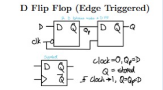
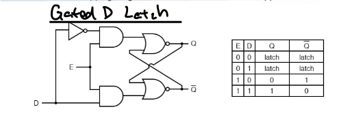
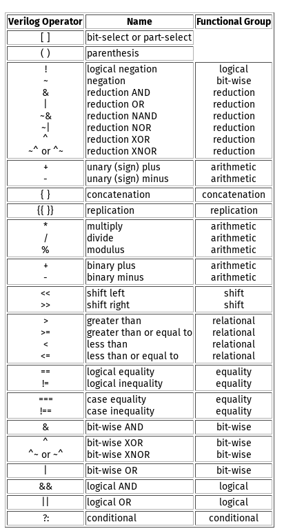
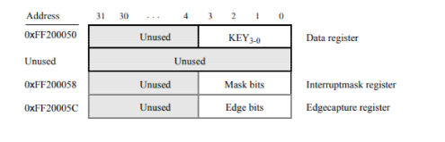

Exam ‘cheat sheets’ for EngSci 2nd year semester fall semester. These were made as part of my own studying for the exams. As 3/6 of my exams were cancelled due to the omicron covid variant, AER210, MAT292, and PHY293 are missing.
I do not guarantee content correctness – but if you find a mistake, please let me know!
CHE260
Note: the following only contains materials for the final exam, so it will only cover the heat-transfer portion of CHE260.
Variables
Below are some variables and what they generally mean in the context of CHE260
- \(k\): Thermal conductivity constant. Larger for good heat conductors, lower for ones that do so poorly
- \(h\): Convection heat transfer coefficient
- \(\alpha = \frac{k}{\rho c_p}\): Thermal diffusivity
- \(T_{film} = \frac{T_s + T_\infty}{2}\): Film temperature: estimated temperature at the convection layer
Heat Transfer Mechanisms
$$Q_{conduction} = -kA\frac{dT}{dx}$$ $$Q_{convection} = hA(T_s - T_\infty)$$ $$Q_{radiation} = \varepsilon\sigma A(T_s^4-T_{surr}^4)$$ Note: for radiation make sure to use Kelvin, not Celsius.
Steady Heat Transfer
We can apply the thermal resistance concept to build heat transfer resistance networks:
$$\dot{Q_{tot}} = \frac{T_2 - T_1}{R_{total}}$$
\(R_{total} \) is obtained through the various expressions for heat resistance for different shapes and methods. Draw out the resistance network and then solve for the total resistance which works in the same way as electrical resistance. Conduction resistances stacked perpendicular to the direction of heat flow are represented by parallel resistances.
For example, for two planes of glass,
$$R_T = R_{conv, 1} + R_{glass,1} + \\ R_{air} + R_{glass, 2} + R_{conv, 2}$$
Note the convection on either side.
The temperature at a point is is given using the heat transfer with resistance equation with a known total heat transfer and resistance between points \(a, b \), and temperature at one of the points.
$$Q_{a\rightarrow b} = \frac{T_a - T_b}{R_{a\rightarrow b}}$$
For spherical or cylindrical heat transfer there is a critical radius of insulation \(r_{cr} \) for which the heat transfer rate reaches a maximum, i.e. for \(r < r_{cr} \) the heat transfer rate is below maximum and will actually increase with added insulation until \(r = r_{cr} \), after which the heat transfer rate will go back down again.
- For a sphere: $$r_{cr} = \frac{2k_{ins}}{h}$$
- For a cylinder: $$r_{cr} = \frac{k_{ins}}{h}$$
Fins
For these problems just plug and chug.
$$a = \sqrt{\frac{hP}{kA_c}}$$
-
Infinitely long fin $$\frac{T(x) - T_\infty}{T_b - T_\infty} = exp(-ax)$$ $$\dot{Q} = \sqrt{kPkA_c}exp(-ax)$$
-
Adiabatic tip/insulated tip fin
$$\frac{T(x) - T_\infty}{T_b - T_\infty} = \frac{\cosh{a(L-x)}}{\cosh{aL}}$$ $$\dot{Q} = \sqrt{kPkA_c}(T_b - T_\infty)\tanh{aL}$$
where \(P \) is the perimeter of the fin and \(A_c \) is the cross-sectional area. \(h \) is the convection heat transfer coefficient of the surrounding fluid, and \(k \) the thermal conductivity constant for the fin material
Misc:
- Fins exposed to convection at tips can be modelled as an adiabatic tip fin with a corrected length
$$L_c = L + \frac{A_c}{p}$$
- Fin efficiency is the ratio of actual heat transfer (non-uniform temperature) to maximum heat transfer (uniform temperature)
$$\eta = \frac{\dot{Q_{tot}}}{\dot{Q_{tot\space max}}}$$
- Fin effectiveness is the ratio of heat transfer due to fins to heat transfer if the fins were not present. \(A_b \) denotes the area of the fin bases, not that of the whole surface the fins are attached to.
$$\varepsilon = \frac{\dot{Q_{fin}}}{\dot{Q_{no\space fin}}} = \frac{\dot{Q_{fin}}}{hA_b(T_b-T\infty)}$$
- Fin effectiveness and efficiency are related by
$$\varepsilon = \frac{A_{fin}}{A_{base}}\cdot\eta$$
Transient Heat Transfer
TLDR; modelling heat transfer as a function of time as well. If possible, apply lumped system assumption which assumes that the whole system has uniform temperature.
- Characteristic Length: \(L_c = \frac{V}{A_{surface}}\)
- Biot number: \(Bi = \frac{hL_c}{k}\)
Note: When we look up \(\lambda_1\) and \(A_1\) from tables make sure to use the same formula for Biot’s number as used by the reference source. The textbook uses \(Bi = \frac{hr_o}{k}\) for cylinders and spheres.
Lumped system approximation is valid for $$Bi \leq 0.1$$
We then can get the following by solving the heat equation
$$b = \frac{hA_s}{\rho c_p V} = \frac{h}{\rho c_p L_c}, [b] = s^{-1}$$
$$\frac{T(t) - T_\infty}{T_i - T_\infty} = e^{-bt}$$
Most questions will then get you to plug in the boundary conditions \(T_i, T(t), T_\infty\) and then have you solve for \(t\) or some combination thereof.
Procedure:
- Determine \(L_c\)
- Determine \(Bi\) and check if lumped system is valid
- Plug into heat equation and solve for unknown
if \(Bi > 0.1\), then you will have to do some more work.
- Assume \(\tau>0.2\) so one-term approximation is valid
- Given \(Bi\), look up in reference table to find \(\lambda_1\) and \(A_1\)
- Plug into the right expression for dimensionless temperature \(\theta = e^{-Bi*\tau}\). Below is the one-term expression for a plane wall. They all generally have a similar form.
$$\frac{T(x, t) - T_\infty}{T_i - T_\infty} = A_1e^{-\lambda_1^2\tau}\cos{\frac{\lambda_1 x}{L}}$$ and note that in this expression time is w.r.t. dimensionless time \(\tau\) – so to convert back to dimensioned time we apply $$\tau = \frac{\alpha t}{L^2}$$ to recover \(t\).
Note that at the center of a plane wall/cylinder/sphere/etc the above expression can be simplified to $$\frac{T(0, t) - T_\infty}{T_i - T_\infty} = A_1e^{-\lambda_1^2\tau}$$
For some questions (for example a plane wall cooled on both sides) we can express \(T(x,t)\) w.r.t \(T(0, t)\), i.e. \(T(x, t) = T(0, t)\cos{\lambda_1 x/L}\)
For heat transfer we express it as a % of the maximum heat transfer.
Given
$$Q_{max} = mc_p(T_\infty - T_i)$$
which denotes heat transfer as \(t\rightarrow\infty\)
we derive a ratio \(\frac{Q(t)}{Q_{max}}\) for different geometries, which should be given. \(Q(t)\) is the sum of internal energy changes throughout the entire geometry which can be expressed as a volume integral.
Semi-Infinite Solids
Used to model temperature change in part of body due to thermal conditions on a single surface TLDR; use this for questions where they don’t give you dimensions
$$\eta = \frac{x}{\sqrt{4\alpha t}}$$
For constant \(T_s\) we obtain
$$\frac{T(x,t)-T_i}{T_s-T_i} = erfc(\eta)$$
and
$$\dot{q}_s(t) = \frac{k(T_s-T_i)}{\sqrt{\pi\alpha t}}$$
where
$$erfc(\eta) = 1- \frac{2}{\sqrt{\pi}}\int^\eta_0 e^{-u^2}du$$
Generally we will be looking up \(\eta, erfc(\eta)\) in a table.
Forced Convection Heat Transfer
TLDR: What if we forced fluids instead of letting the convection happen naturally?
We know that
$$Q_{conv} = hA(T_s - T_\infty)$$
But how do we get \(h\) for forced convection? Either look it up from a table, get it experimentally, or do some math.
$$h=\frac{-k_{fluid}(\frac{\delta T}{\delta y}\vert_{y=0})}{T_s-T_\infty}$$ Note that the temperature distribution for a moving fluid isn’t constant. We can usually use an average one $$h=\frac{1}{A_s}\int_{A_s}h_{local}dA_s$$
Note: surface integral for the 2D case, and the over length \(L\) for the 1D.
In cases where the laminar flow region cannot be entirely disregarded, we must integrate over the parts separately
$$h = \frac{1}{L}(\int_0^{x_a} h_{x, laminar}dx + \\ \int_{x_a}^L h_{x, turbulent}dx)$$
Recall from AER210 the that fluid exerts a drag force \(\tau\) on the walls
$$\tau = \mu \frac{\delta\mu}{\delta y} \vert_{y=0}$$
Or,
$$\tau = c_f \frac{\rho v_o^2}{2}$$
where \(c_f\) is a friction coefficient which depends on geometry.
Forced convection is described with help from a few numbers
- Reynold’s number \(Re\)
$$Re = \frac{\rho V_\infty D}{\mu} = \frac{V_\infty x}{\nu}$$ Note: \(\nu\) is kinematic viscosity \(\nu = \frac{\mu}{\rho}\)
Large \(Re\) tends towards turbulent flow, small tends towards laminar flow. Generally if \(Re<5*10^5\) the flow is laminar and it is turbulent otherwise.
- Prachett’s number \(Pr\)
The ratio of molecular diffusivity of momentum over the molecular diffusivity of heat
$$Pr = \frac{v}{\alpha} = \frac{\mu c_p}{k}$$
- Nusselt’s Number \(Nu\)
The dimensionless heat transfer coefficient which is the ratio of the convective heat transfer rate to the conductive heat transfer rate.
$$Nu = \frac{hL_c}{k}$$
We can then apply Buckingham \(\pi\) to represent \(Nu\) w.r.t. \(Re\) and \(Pr\).
$$Nu_x = \frac{h_xx}{k} = cRe_x^nPr^m$$
Note that here \(Nu\) is local to point \(x\)
And the coefficients \(c, m, n\) can either be solved for with experimental data or will be given. For example, for laminar flow over a flat plate:
$$Nu = \frac{hL}{k} = 0.664Re_L^{0.5}Pr^{(1/3)}, \\ Re_L < 5*10^5, Pr > 0.6$$
… and for turbulent flow: $$Nu = \frac{hL}{k} = 0.037Re_L^{0.8}Pr^{(1/3)}, \\ 5*10^5 \leq Re_L \leq 10^7, 0.6 \leq Pr \leq 60 $$
For isothermal surfaces with an unheated starting section of length \(\xi\) the local Nusselt’s number is given by
laminar :
$$Nu_x = \frac{hL}{k} = \frac{0.332Re_x^{0.5}Pr^{1/3}}{[1-(\xi/x)^{3/4}]^{1/3}}$$
turbulent :
$$Nu_x = \frac{hL}{k} = \frac{0.0296Re_x^{0.8}Pr^{1/3}}{[1-(\xi/x)^{910}]^{1/9}}$$
What is important to note here is that these equations are valid for an isothermal flat plate with an unheated starting section of length \(\xi=0\) as well. The equations would be the same as the two above except the denominator is 1. The previous equations (e.g. \(c=0.664\)) are valid for a flat plate heated at the leading edge.
Other:
- No-slip condition applies at walls, so right by the wall heat transfer is conductive. \(\dot{q} = \dot{q_{cond}}\)
Radiation Heat Transfer
For this section everything is just plug and chug and being careful with view factors. Most problems involve an energy balance \(\dot{q_{in}} = \dot{q_{out}} \)
-
Stefan-Boltzmann Law: $$E_b(T) = \sigma T^4$$
-
Wein’s displacement law: finding the wavelength that gives the maximum power for a specified surface temperature $$(\lambda T)_{max power} = 2897.8 \mu \cdot K$$
-
Reciprocity rule:
$$A_iF_{i\rightarrow j} = A_jF_{j\rightarrow i}$$
Where \(F_{i\rightarrow j} \) is the ‘view factor’, i.e. the percent of radiation leaving surface \(i \) that strikes surface \(j \) directly.
- \(\alpha = \frac{G_{absorbed}}{G} \): Absorptivity
- \(\rho = \frac{G_{reflected}}{G} \): Reflectivity
- \(\tau = \frac{G_{transmitted}}{G}\): Transmissivity
These variables also have the property
$$\alpha + \rho + \tau = 1$$
Note: for opaque surfaces \(\tau = 0 \)
- Summation property: the set of view factors that describe radiation beginning at surface \(i \) and ending at all surfaces \(j \) that it touches has a sum of \(1 \).
$$\sum^N_{j=1}F_{ij} = 1$$
- Putting all together When are looking at black body radiation only: $$\dot{Q_{1\rightarrow 2}} = A_1 F_{1\rightarrow 2} \sigma (T_1^4 - T_2^4)$$
Note: $$\dot{Q_{1\rightarrow 2}} = A_1\dot{q_{1\rightarrow 2}}$$
- Heat transfer between surfaces
$$\dot{q_{12}} = \frac{\sigma(T_1^4-T_2^4)}{ \frac{1-\varepsilon_1}{A_1\varepsilon_1} + \frac{1}{A_1F_{12}} + \frac{1-\varepsilon_2}{A_2\varepsilon_2}}$$ Where the middle term in the denominator denotes the “resistivity” due to space and the other terms due to radiation.
So we can build resistance networks by adding up the resistances of each element here as well!
- Kirchhoff’s law: Total emissivity of a surface is equal to the absorptivity for radiation coming from a black body at the same temperature
$$\varepsilon_\lambda(T) = \alpha_\lambda(T)$$
- Radiosity: The radiation emitted + the radiation reflected by surface \(i \)
$$J_i = \varepsilon_i E_{bi} + (1-\varepsilon)G_i$$
Note that we know that for an opaque surface (\(\tau=0\)), \(\varepsilon + \rho = 1 \)
Other
- Radiation heat transfer coefficient \(h_{rad} \) provides radiative heat transfer as \(\dot{q} = h_{rad}(T_1-T_2)\)
ECE253: Digital and Computer Systems
Note: Hugo Chroma for armasm seems to be a little different from ARMv7 used. So the following code blocks will be highlighted with nasm syntax. Comments will be denoted with ‘;’ but should be ‘//’ in ARMv7.
Logic and Circuits
Karnaugh Maps
- Group w.r.t powers of 2.
- For 7-seg-display draw a K-map for each segment
- Minterm: Product term that evals to 1
- Maxterm: Sum term that evals to 0 Note that for minterms you don’t need to NOT it but for maxterms you do.
- Canonical POS: Maxterms that cover all 0s
- Canonical SOP: Minterms that cover all 1s
- Prime implicant: The largest group that can be covered by a single implicant
- Essential Prime Implicants: An implicant that covers a term that is not covered by any other implicant
- Find set comprised of most essential prime implicants – lowest cost cover
Other:
- Two’s complement: Flip bits and add 1. Leading 1 denotes negative number, leading 0 denotes positive number. E.x. 6 = 000100, -6 = 111001 + 1 = 111010.
- Finite State Machines
- Draw out state table: |state|next w=0, w=1|output
- Assign encodings to states e.g. A=1, B=2 .. or use one-hot
- Reduce with K-maps; take columns on tables for K-map entries
- Use a case statement or series of flip-flops to implement the FSM
Circuits to know
 D flip flop  Gated latch
Commonly used to storage a single bit of data. Can be chained together to store multiple bits of data, commonly as a shift register.
Verilog

- Blocking vs Non-blocking
= is non-blocking, <= is blocking. For non-blocking = we treat the logic as combinatorial, and for blocking <= we treat the logic as sequential. So all the = steps can take one cycle (completed in parallel) while the <= steps can take multiple cycles (completed in sequence). With sequential logic, “step through” the behaviour of the circuit first and then it should be pretty clear how to build it.
- Latches: checks the value as long as clock is high
- Flip flops: check only on clock edge
- Active high: reset when 1
- Active low: reset when 0
- Synchronous: reset on the next clock edge that the flip flop is supposed to resond to
- Asynchronous: reset on the next clock edge at anytime
- Cost heuristic: # gates + # inputs where inputs is the # of inputs to gate. i.e. cost of a AND gate is 1 + 2 = 3 since it is 1 gate and 2 inputs
ARM Assembly
For De1-SOC
- Registers are 32 bit/4 bytes
- Each instruction is 32 bits/4bytes long
- Tricks:
- Can extract the lowest bits out of a register by ANDing it with a ones mask
- Left shift by n bits is equivalent to multiply by 2^n
- Right shift by n bits is equivalent to divide by 2^n
- Registers: R0-R12: General Purpose R13: Stack Pointer R14: Link Register R15: Program Counter R16: Status Register
Opcode format:

We can load the top and bottom halves of registers into another like this:
|
|
Instructions
Note that in the following I use O\d to denote an [O]perand which can be a register, a constant, or whatever else also works.
MOV DEST, SRCLDR TARGET, [SOURCE, #offsetpos1], #offsetpos2. If using offsetpos1, SOURCE is pre-indexed, offsetpos2 post-index. When using with memory location or numeric literal, prepend=, i.e.LDR R0, =LISTorLDR R1, =0x0000000bLDR{OPT},STR{OPT}, opt can be B: byte, H: halfword – if we only want to use part of it.STR DEST, [TARGET]CMP O1, O2: CompareO1andO2by computingO2 - O1and then updating NZCV flags in the CPSRADD O1, O2, O3: AddO2toO3and store the result inO1SUB O1, O2, O3: SubtractsO3fromO2and store the result inO1ASR(Arithmetic Shift Right): Shift to the right, shifted in bits depend on leading sign bitLSL(Logical Shift Left): Shift to the left, shifted in bits are 0LSR(Logical Shift Right): Shift to the right, shifted in bits are 0MUL, O1, O2, O1: MultiplyO1byO2and store the result inO1ORR, AND: Bitwise OR, AND
Note: MOV directly puts it into the destination register, LDR loads the value from the memory location into the destination register, STR stores the value from the source register into the memory location.
When LDR is used with a literal it first loads the literal into memory and then loads the value from the memory location into the destination register.
- Conditional Execution
Do CMP, then apply
INSTR{COND}or do a branch Conditions:EQ, NE, GT, LT, GE, LE, S, -E denotes “or equal to”.Sfor add, subs updates N, Z, C, V flags
|
|
Using PC, LR
At instruction i, PC stores the address of the next instruction at i+1. The current instruction can be obtained via a negative offset ,#-4
LR by convention stores what we want to return to after a subroutine.
So, assuming that the first instruction of the following code chunk is stored at 0x0,
|
|
Subroutines
- Parameters are passed via
R0-R3, which subroutines are free to modify and return with - Subroutine should not modify the remaining registers; if so they should
PUSH/POPto the stack before and after use - Exit subroutine with
MOV PC, LR BLis a branch and link instruction, which setsLRto the next instruction and setsPCto the label address
Stacks
-
Must first initialize stack pointer,
LDR SP, 0x20000 -
Pushing to the stack pointer puts the value on top of the stack and decreases the stack pointer
-
For many subroutines needing more than the default registers we want to push and pop the registers before and after we’re done.
-
PUSH {Rs}: Pushs registers onto stack. Registers must be in ascending order and the largest one gets pushed in first. Has effect of decreasing the stack pointer. -
POP {Rs}: Pops data off the stack. Does not care what register the stack data comes from; i.e.PUSH {R5} POP {R6}would put R6 into R5. Can be used in recursion to putLRintoPC. Has effect of increasing the stack pointer.
For example, taking the initial stack pointer value of 0x2000 we applying PUSH {R0, R3, LR} we get:
| memory | value |
|---|---|
| 0x2000 | LR |
| 0x1FFC | R3 |
| 0x1FF8 | R0 |
Recursion
The following are assuming SP, etc has been init’d
|
|
|
|
Interrupts
ARM changes modes when an exception occurs.
- Processor reset (SVC)
- Unimplemented instruction (Undefined)
- Error (abort)
- Hardware interrupt (IRQ)
- CPSR is svaed to SPSR of new mode
- CPSR is changed to enter new mode
- PC is saved into banked LR of new mode
- Loads into PC a unique addr from the exception vector table associated with the new mode
General Interrupt procedure:
- Provide exception vector table
- Init SP for IRQ and SVC mode
- Configure GIC (Code provided)
- Enable IRQ generation in I/O devices
- Enable CPU interrupts (I=0 in CPSR)
- Provide
IRQ_HANDLERwhich queries GIC to determine intterupt source - Provide
ISRs - Clear interrupt in GIC
Steps 1-5:
|
|
Steps 6, 8:
|
|
Step 7:
|
|
|
|
-
Setting up stack pointer
-
CPSR: Current Program Status Register
| 31 | 30 | 29 | 28 | .. | 7 | 6 | 5 | 4 .. 0 | |
|---|---|---|---|---|---|---|---|---|---|
| N | Z | C | V | .. | [I]nterrupt | F | T | mode |
CPSR is saved when an interrupt occurs so that flags and mode it can be restored when the interrupt is handled.
- N: Negative (2’s complement bit of result)
- Z: Zero
- C: Unsigned overflow (carry)
- V: Signed overflow
There are a few modes and each one of them have a different stack pointer
|
|
We only care about the IRQ and Supervisor modes. These can be set by loading the appropriate value into the CPSR.
|
|
Note that the two stack pointers on line 3 and 6 are different.
In order to enable interrupts the I must be set to 0. 1 disables it, which is the default.
IO
Timers
Counts down to 0 at a known clock rate (that of the board). Takes a load value which is the starting counter value. Current value at an offset.
A: AutoreloadF: Interrupt status (=1 when counter 0)I: Interrupt enableE: Starts timer
|
|
Using KEYS
- Enabling interrupts

Apply a mask onto the relevant memory location.
E.g. to enables KEY3 and KEY0, we would:
|
|
When polling just grab the items at the base address.
When using interrupts LDR the edge capture register to find the ones that have been pressed
Using LEDR
To display using LEDR we just need to write the value we want to the appropriate memory location.
Here, assuming that what we want to display is stored in R1:
|
|
MAT292
AER210
PHY293
ESC203
n/a